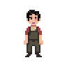

마을 사보타주 추리 게임 — 기획/개발 현황판
게임명 미정 (임시: game-project) · Repo: hoitman297/AI_Hakathon_NAN_2026 · 작성: 류수정(기획)
7일
최소 클리어 소요일 (최대 9일)
7명
NPC 등장인물
8종
LLM 실시간 생성 콘텐츠 종류
3개
서비스 (frontend/backend/llm-proxy)
① 사전과제 제출 현황
플레이 동영상(2번)은 이번 대시보드/자료 준비 범위에서 제외했습니다(요청 반영).
| # | 제출물 | 제출 형태 | 상태 | 비고 |
|---|---|---|---|---|
| 1 | 플레이 가능한 빌드 및 소스 코드 | 웹(브라우저) 또는 APK + 전체 소스 GitHub Pages 링크 |
배포 설정 필요 | 프론트엔드 플레이 루프(로그인→캐릭터생성→낮/밤→고발→엔딩)는 코드상 구현 완료. 다만 백엔드(Spring)+MySQL이 있어야 실제 플레이가 되는 구조라, GitHub Pages(정적 호스팅)만으로는 부족함 — 아래 ⑧ 참고. |
| 2 | 플레이 동영상 | 30~60초, YouTube 링크 | 이번 준비 범위 제외 | 요청에 따라 제외 |
| 3 | 게임 소개 및 설명 문서 | 초안 작성 완료 | 게임_소개_및_설명_문서.pdf — 검토 후 확정 필요 |
|
| 4 | AI 활용 기술 문서 | 초안 작성 완료 | AI_활용_기술_문서.pdf — 코드에 사용한 AI 코딩 도구명(1개 항목)은 팀 확인 필요로 표시해둠 |
|
| 5 | 팀원 롤 기술서 | PDF (개인 참여 시 생략) | 보류 | git 커밋 기준 4인 이상 참여 확인(류수정, 명지원 추정, hoitman297, hyeju0223) — 각자 역할 확인 후 별도 작성 예정 |
② 기능 구현 현황
TODO.md·개발 로그(2026-08-03~08-05)와 실제 소스 구조 기준. "완료"는 코드 레벨 구현 기준으로, 실 기기 테스트/밸런스 검증까지 끝난 상태를 뜻하지는 않습니다.
| 화면 / 프론트 기능 | 상태 |
|---|---|
| 타이틀 · 로그인 · 로그아웃 | 완료 |
| 캐릭터 생성(닉네임/성별) | 완료 |
| 이어하기(세이브 슬롯) | 완료 |
| 낮 화면 — 맵 이동(Phaser) | 완료 |
| 대화창(NPC LLM 대화) | 완료 |
| 농사(파종/수확) · 채집 | 완료 |
| 상점(구매/판매) | 완료 |
| 인벤토리(아이템/단서카드/호감도) | 완료 |
| 밤 전환 연출 | 완료 |
| 고발(추리 지목) 화면 | 완료 |
| 엔딩 화면(성공/배드엔딩) | 완료 |
| 백엔드 없이 보는 마을 프리뷰 모드 | 완료 |
| 자동 저장(일차 전환 시) | 완료 |
| 백엔드 / LLM 시스템 | 상태 |
|---|---|
| 세션 생성 · 일차 진행 · 종료 판정 | 완료 |
| 범인 랜덤 배정(주+보조 유형) | 완료 |
| 이동 체력 소모(초당 소모 모델) | 완료 |
| NPC 페르소나 생성(구조화 출력) | 완료 |
| 실시간 대화 + 호감도 등급별 태도 | 완료 |
| 7일차 이후 추리 대화 제한 | 완료 |
| 단서 카드 생성/명확화(외형 기반 LLM) | 완료 |
| 랜덤 이벤트 · 엔딩 스토리 생성(LLM) | 완료 |
| 인증/세션 소유권 검증, 낙관적 락 | 완료 |
| LLM 레이트리밋 · 고발 1일 1회 제한 | 완료 |
| 게임 세이브/로드 · ending_state 동기화 | 완료 |
| NPC 페르소나 관리자 편집기(신규) | 완료 |
| DB 마이그레이션 도구(ddl-auto 의존) | 트레이드오프로 유지 |
전체적으로 게임 플레이 루프(핵심 기능)는 이미 처음부터 끝까지 코드상 연결되어 있는 상태입니다. 남은 리스크는 기능 누락보다는 ①실제 기기 다중 플레이 테스트, ②밸런스 수치 확정, ③배포(아래 ⑧) 쪽에 있습니다.
③ 기획서 vs 구현 체크 — 기획자가 확인할 항목
기획서_분석.md에서 지적된 불일치 중, 개발 로그 기준으로 이미 해결된 것과 여전히 기획자 판단이 필요한 것을 구분했습니다.
| 항목 | 내용 | 상태 |
|---|---|---|
| 고발 가능 시점 | 기획서 구버전(3일차)과 최신본(7일차) 충돌 → 최신본(7~9일차 순차 재도전) 기준으로 반영됨 | 해결됨 |
| 이동 체력 소모 단위 | "이동 1회=체력5" 이산 모델 → "이동 중 초당 0.15 소모(운동화 시 0.12)" 연속 모델로 개정 반영 | 해결됨 |
| 보조 사보타주 유형 | 주 유형만으론 범인이 특정되는 문제 → 주 80%/보조 20% 가중 랜덤으로 해결 | 해결됨 |
| PDF 내부 모순(운동화 효과) | 기획서 6p(초당 0.15→0.12)와 9p(5→4)가 서로 다른 문구로 남아있음 | 기획팀 확인 필요 |
| 체력 최대치 / 일일 시작치 | 기절 후 리스폰 값(70)만 명시 — 이게 최대치인지 일부 회복치인지 불명확 | 기획자 수치 확정 필요 |
| 기절 페널티 | "다음날 70으로 시작" 외 추가 페널티(시간손실/아이템손실/호감도 등) 여부 미정 | 기획자 결정 필요 |
| 농사/채집 가격표 | 작물4종·과일4종 수치표는 존재하나 "제안" 단계, 최종 확정 아님 | 기획자 확정 필요 |
④ 9일 진행 일정
1일차
조사 시작1~5일차 밤
매일 밤 사보타주 발생 (총 5회)2~6일차
전날 밤 장소에서 단서 카드 습득 (총 5장)6일차 밤
사보타주·단서 없음7일차
첫 고발 가능일. 추리 대화 제한7→8일차 밤
(오답 시) 마을 대상 랜덤 이벤트8일차
재시도 가능, 분위기 무거워짐8→9일차 밤
(오답 시) 플레이어 대상 랜덤 이벤트9일차
마지막 재시도. 실패 시 배드엔딩⑤ NPC 7명
현수동
이장 · 70대
변화 싫어함, 퉁명·고집
나주부
상점 아내 · 30대초
상냥·사교적
전주인
상점 주인 · 30대중
친절·계산적, 눈치빠름
박영계
양계장 주인 · 41세
마을 소식통, 오지랖
명자유
프리랜서 · 25세
내향적, 겁 많음
김치준
취준생 · 28세
차분, 뒤끝 있음 (7과 앙숙)

나박수
수박밭 주인 · 32세
열정파, 직설적 (6과 앙숙)
⑥ 핵심 시스템 요약
사보타주 (3유형)
- 절도형 — 작물/과일 서리, 상점 물건
- 파손형 — 울타리·벤치·조각상·화분
- 방해공작형 — 동물 방생, 작물 훼손
호감도 (0~100, 시작 50)
- 70+ — 우호적, 단서 먼저 제공
- 30~70 — 기본 대화만
- 30미만 — 회피·단답 (완전 차단 아님)
- 오답 지목 시 본인 -30 / 근접 -10~15 / 무관 -5
상점 아이템 (4종)
- 운동화 50원 — 이동 소모 20%↓ (영구)
- 거짓말탐지기 60원 — 정직모드 1턴 (1일1회)
- 돋보기 30원 — 단서 명확화 (1일1회)
- 선물세트 40원 — 호감도 +10~15
체력 소모표
- 이동 — 초당 0.15 (운동화 0.12)
- 대화 1세션 — 8
- 파종/수확 1회 — 각 5
- 채집 1회 — 3 (재생주기 전 재채집 불가)
단서 카드 (5장·5주제)
- 머리카락 · 소지품 · 발자국 · 혈흔(1회성) · 자국
- 사보타주 장소에서 습득, 놓쳐도 계속 남음
- 가짜 카드 없음 — 문구만 애매하게 설계
인벤토리 / 경제
- 슬롯 7칸 (확정)
- 체력 회복은 직접 기른 작물·채집 과일만 가능
- 과일 4종 중 매일 1~2종 랜덤 등장
- 남는 작물은 상점 판매로 환전
⑦ AI 활용 요약
자세한 내용은 AI_활용_기술_문서.pdf 참고. 아래는 대시보드용 요약.
| 기능 | 모델 | 핵심 설계 |
|---|---|---|
| NPC 페르소나 생성 | Claude Opus 5 | 구조화 출력(JSON Schema)으로 배경서사·예시대사 확장, 세션당 1회 캐시 |
| 실시간 대화 | Claude Sonnet 5 | 호감도 3구간별 톤 지시, 목격담/최근 이벤트 반영, 프롬프트 캐싱, thinking 비활성화(속도) |
| 단서 카드 생성/명확화 | Claude Opus 5 | NPC 외형 묘사 기반 5주제 가이드, 범인 이름 절대 미언급 |
| 랜덤 이벤트 / 오답 반응 / 엔딩 스토리 | Claude Opus 5 | 범인 정보 비전달로 스포일러 방지, 엔딩은 세션당 1회 캐시 |
안전장치: Claude 응답 거부(refusal) 감지 후 폴백 문구 전환 · 계정별 분당 호출 제한 · 고발 API 일 1회 제한 · read timeout 45초(실측 지연 20~24초 대비 여유)
⑧ 다음 액션 — 기획자가 챙길 것
- 배포 방안 결정 (1번 제출물 관련) — 현재 GitHub Actions 배포 워크플로우 없음. 프론트만 GitHub Pages에 올리면 백엔드(Spring)·DB 연결이 안 돼 실제 플레이가 불가능함. 팀 개발자와 함께 ⓐ백엔드를 Render 등에 별도 배포 + 프론트에서 그 주소를 바라보게 하고 프론트만 GitHub Pages/Vercel에 배포, ⓑ또는 백엔드 없이도 보이는 "마을 프리뷰 모드"만 우선 배포 중 방향을 정해야 함.
- 팀원 롤 기술서(5번) 작성 — git 기여자 기준 최소 4인(류수정, 명지원 추정, hoitman297, hyeju0223) 확인됨. 각자 실제 담당 영역(기획/프론트/백엔드/LLM 등) 확인 후 문서화 필요.
- 밸런스 수치 확정 — 체력 최대치/일일 시작치, 기절 추가 페널티, 농사·채집 가격표 최종 확정.
- 기획서 PDF 자체 모순 정리 — 운동화 효과 수치가 문서 내 6p/9p에서 다르게 적혀 있음, 최신 기준(초당 0.15→0.12)으로 통일 필요.
- AI 활용 문서 1개 항목 확인 — 코드 작성 자체에 사용한 AI 코딩 도구(브랜치명
codex가 보여 Codex 계열 도구 사용 추정)를 팀에 확인 후 문서에 반영.